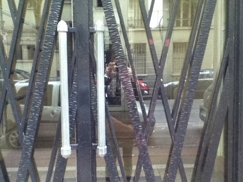

Henry Miller in Paris

Henry Miller lived here: Avenue Anatole France, 4, Paris.
Last week I spent in Paris, walking up and down a street that Henry Miller once walked up and down. I read Black Spring in the metro and went to see Miller’s house on Avenue Anatole France. I sat at La Fourche in the morning, reading this sentence over and over.
I recall the house I lived in, the mask it wore, the demons which inhabited it, the mystery that enveloped it; I recall each being who crossed the horizon of my childhood, the wonder that wrapped him about, the aura in which he floated, the touch of his body, the odor he gave off; I recall the days of the week and the gods that ruled over them, their fatality, their fragrance, each day so new and splendorous or else long and terrifyingly void; I recall the home we made and the objects which composed it, the spirit which animated it; I recall the changing years, their sharp decisive edges, like a calendar hidden away in the trunk of the family tree; I recall even my dreams, both those of night and those of day. — Henry Miller, “Walking Up and Down in China,” from Black Spring
· · · · · · · · · · · · · · · · · · · ·